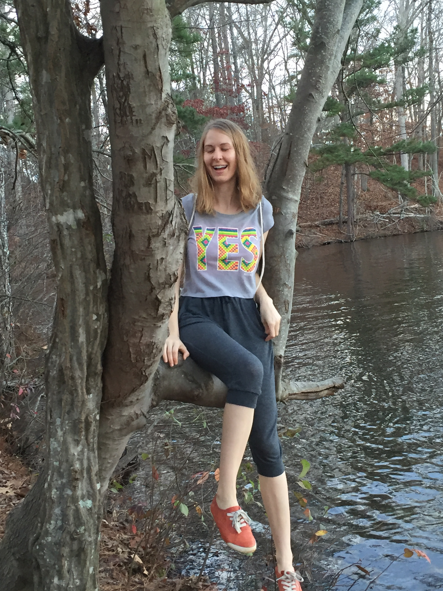
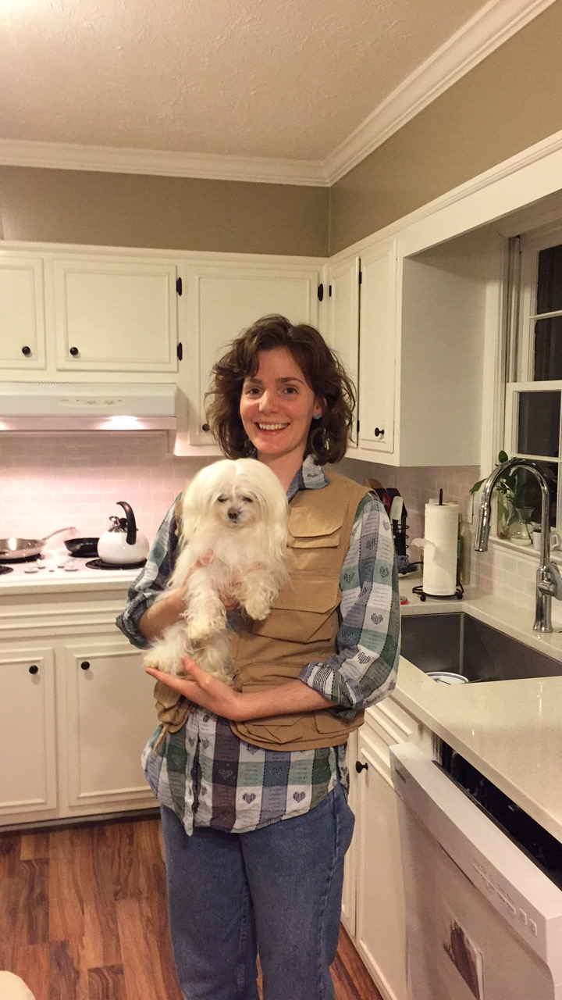

Bio
We are Carolyn Ayers and Alex Volpert.
We make paintings, magnets, pottery and diapers for dogs. We are influenced by geocities sites, byzantene icons, and 1960s era advertizements for kitchen implements. We dislike the smell of most laundry detergents.
 